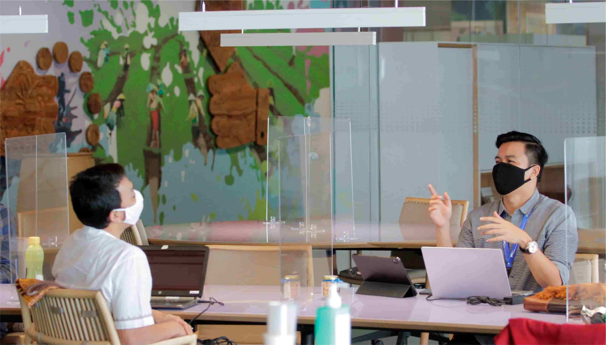

United Nations In Indonesia
Country Results Report 2021
Policy Making and Institutional Capacity
Building for Inclusive and non-Discriminatory
Workplaces

The principles of equality and anti-discrimination are enshrined in Indonesia’s Constitution and its labour law. Still, marginalised groups including women, people living with HIV, key populations vulnerable to HIV infection, indigenous peoples, and people with disabilities often struggle against inequitable access to employment opportunities and social protection. According to an UN-supported study conducted before the pandemic, for example, one-fifth of people living
with HIV were unemployed in 2018 compared to a national unemployment rate of 4.4% that year. COVID-19 is likely to have made disparities in unemployment more pronounced.
The UN is working at all levels to promote more inclusive, non-discrimanory workplaces. In 2021, a UN collaboration with Indonesia’s Ministry of Manpower on policy development brought about a revision of Indonesia’s Equal Employment Opportunity guidelines that advances women’s economic empowerment. The new guidelines were under final review by year’s end.
Meanwhile, the UN endeavoured to tackle workplace- based stigma and discrimination against people living with HIV (PLHIV) and Key Populations vulnerable to HIV infections through the COVID-19 Multi-Partner Trust Fund. The UN engaged 100 trade union representatives and other workplace stakeholders to strengthen support for inclusive and non-discriminatory workplace policies. This resulted in the development of a policy paper on non-discriminatory workplaces and upskilled 15 community representatives from nine provinces as advocates for inclusive job markets. These community representatives serve as expert trainers, equipped to train other workplace stakeholders on issues such as the health needs of workers with HIV and TB, measures to create non-discriminatory workplaces that improve gender-equality. From July to December, a series of 20 webinars on these issues targeted human resource managers nationwide, who play a key role in building inclusive workplaces. Through the COVID-19 Multi- Partner Trust Fund a further 100 PLHIV and members of Key Populations participated in UN skills training on digital marketing and fashion design.
Additionally, some 800 female and 200 male members of three of Indonesia largest trade unions participated in a three-month series of UN-facilitated awareness raising sessions on non-discriminatory HIV/AIDS policy coverage for union members in the garment sector, maritime sector, and land transportation sector. These sessions produded a non-discriminatory policy on HIV through as a collaboration between one of the unions and PT SAI Apparel Industry, a major garment sector company in Central Java. The sessions also
provided access to HIV tests for 180 union members. The UN’s union engagement led two other companies —PT Pertamina, in the oil and gas sector, and PT Waskita Karya, in construction— to promote non- discriminatory labour policies through cultivating HIV awareness and introducting of HIV self-screening services at the workplace. Some 3795 male and 665 female workers accessed HIVthe self-screening after it became available.
Finally, in collaboration with Kusuma Buana Foundation, an Indonesian NGO focused on family planning, the UN conducted focus group discussions and in-depth interviews on inclusivity in the workplace. The series of discussions with civil society organizations, public officials, members of the private sector, and trade unions contributed to the UN’s production of a policy paper that included analysis of the current situation on workplace discrimination and recommendations for policies to make workplaces more inclusive.